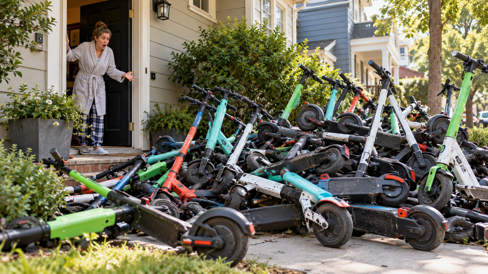
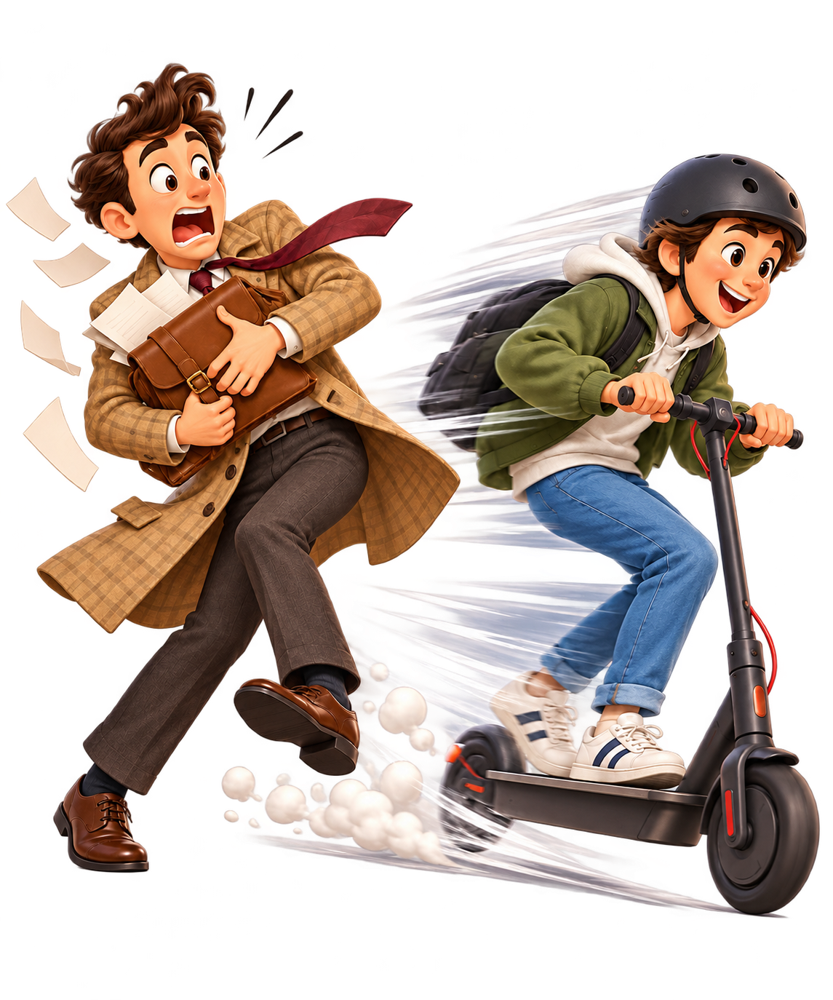
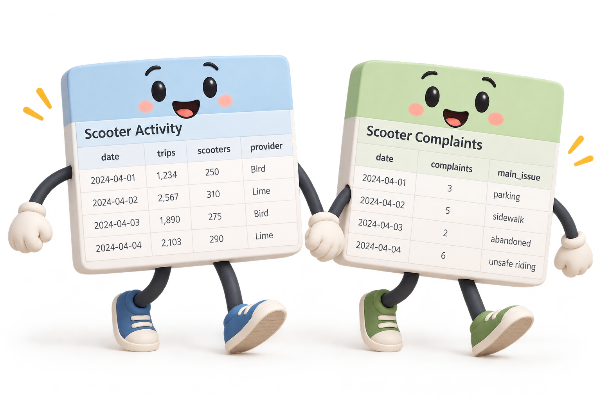

Investigating Scooter Complaints
The scooters are everywhere. The complaints are piling up. Can data help us figure out what's going on?

A city full of scooters. In Lab 2, we explored how scooters were used. What happens when we look at the perspective of people living alongside them?
These activities use public scooter activity and complaint data from the City of Bloomington. Complaint descriptions are written by members of the public and may contain personal information or unverified claims.
When do people complain?
First, let's connect our research question to the modeling ideas from lecture.
Let's work through it together
Your TA will help you build the code for our bar graph. Start with the comments and type along.
R is still loading…
Why couldn't we graph the original one-row-per-complaint table
directly with bar_graph()?
What are people actually complaining about?
Every complaint contains a little story. Let's discover a few.
Complaint roulette
Click to reveal a randomly selected complaint from the classroom CSV.
Let's inspect the first three available descriptions together.
R is still loading…
Now tell R to surprise you.
The function sample() will randomly select complaints each time it runs.
sample() takes two arguments: the data to sample from and the number of
items to select. Run the sample several times, without changing the code.
R is still loading…
Turning words into data
Now we'll make new logical variables that reveal whether particular words appear in descriptions.
Our detective strategy
Choose a word, search every complaint description, save the TRUE/FALSE result in a new column, then count the TRUE values.
A new column doesn't replace the old description: it adds information to the same dataset.
We will use a new function called grepl() to search for specific words
in the complaint descriptions. grepl() is a funny name because it's actually
an acronym for "Global Regular Expression Print List". Global means it searches the entire
string, Regular Expression means it can match patterns, Print List means it returns a
list of TRUE/FALSE values (based on whether it found the target pattern).
The way we use grepl() is by providing it with the word we want to search for,
the column of text to search in, and optionally setting ignore.case=TRUE
to make the search case-insensitive (e.g., "i love scooters" could match "I Love Scooters").
R is still loading…
For your third logical variable, look for "park" (which matches parked and parking). For your fourth logical variable, choose a word you noticed in the complaint roulette!
R is still loading…

Now that you have created your logical variables, we can use our columns
to figure out how often complaints mention each keyword.
You might recall from R Lab 1 that R treats logical values as 1 and 0 when summing them.
You can use sum() to count how many complaints match each keyword!
R is still loading…
R is still loading…
Two datasets are better than one
What happens when scooter activity and resident complaints join forces?

Our research question
Do months with more scooter trips also tend to have more complaints?
Multiple providers and dates, with trip totals and available scooters.
One row per report, with its date and text.
We cannot simply join those original rows: they don't represent the same thing.
The rows in our original scooter activity dataset represent a combination of provider and date.
The rows in our complaints data represent individual reports.
In order to join them together, we need to make versions of each table that have the same row unit.
We will use the year_month column as the common row unit. We will first summarize each table
to one row per year-month, then join on the shared year_month value.
| year_month | trips | count |
|---|---|---|
| 2024-04 | … | … |
| 2024-05 | … | … |
Your TA demonstrates totaling trips, counting complaints, joining the monthly summaries, and graphing the result.
R is still loading…
Use the same steps to test monthly scooter availability. Add up available_scooters across daily
provider records within each month using total_by(). The result is measured in
scooter-days, not unique scooters.
R is still loading…
Both graphs explore associations—not proof of causes. Another factor, such as time of year or changing scooter operations, could influence both variables.
One final reflection: What did joining the tables let you investigate that neither table could answer alone?
Save your investigation
Download your coding work, graphs, and written answers as a PDF and upload it to Canvas.
Run all Try and Together activities before downloading. Teaching slides and roulette are not included in the PDF.